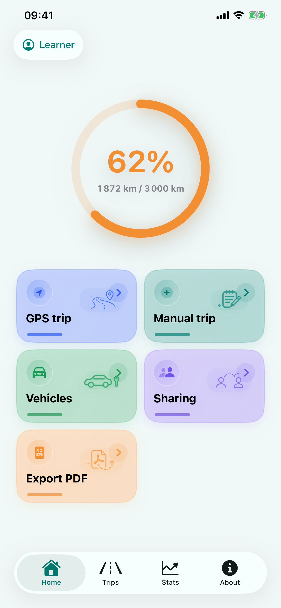
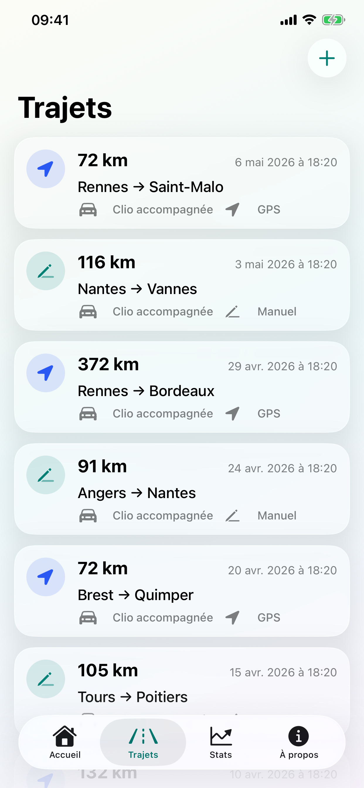
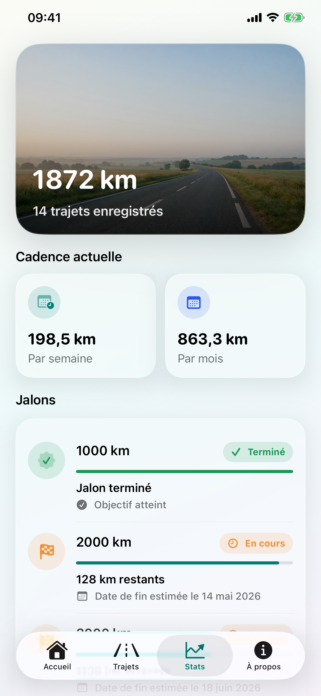
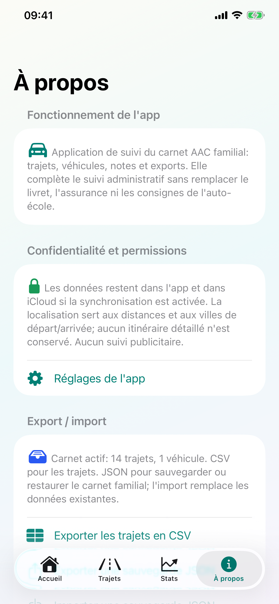

Application iPhone pour la conduite accompagnée
Carnet AAC
Un carnet privé pour suivre les trajets, les véhicules et la progression vers les 3 000 km.
Saisie manuelle ou GPS, tags de conditions, statistiques, partage iCloud, export PDF et sauvegarde JSON dans une app pensée pour l’élève conducteur et ses accompagnateurs.
Suivi clair
Tout le carnet au même endroit.
Carnet AAC regroupe l’accueil, les trajets, les véhicules, les statistiques et les rappels utiles dans une interface locale-first, avec iCloud seulement si l’utilisateur l’active.




Fonctions clés
Conçu pour tenir le suivi sans friction.
Chaque trajet reste modifiable avant validation, avec les informations utiles pour relire le parcours, préparer un rendez-vous pédagogique ou partager le carnet.
Enregistrez départ, arrivée, durée, véhicule, kilomètres et notes, puis corrigez l’estimation GPS si nécessaire.
Gérez le véhicule par défaut, la boîte manuelle ou automatique, et les tags nuit, pluie, ville ou autoroute.
Suivez le total, les kilomètres par mois, la cadence actuelle et les jalons 1 000, 2 000 et 3 000 km.
Partagez via iCloud avec les comptes invités, exportez un PDF et sauvegardez ou restaurez un carnet JSON.
Total des kilomètres, derniers trajets, statut iCloud et raccourcis vers la saisie manuelle, le GPS, les véhicules, le partage et l’export PDF.
Suggestions de lieux à partir du carnet, création d’un trajet retour, modification, suppression, notes et tags optionnels pour suivre les situations travaillées.
Le suivi démarre uniquement sur action utilisateur, affiche distance et durée en temps réel, puis impose une validation ou correction avant sauvegarde.
Un assistant explique les permissions GPS, le suivi en arrière-plan optionnel, la validation à l’arrivée, les tags et le partage iCloud.
Graphique cumulé, barres mensuelles, cadence hebdomadaire et mensuelle, répartition par boîte de vitesse et dates estimées quand le rythme le permet.
Export PDF pour partager un récapitulatif, export/import JSON complet, suppression des trajets et véhicules du carnet actif depuis l’onglet À propos.
Confidentialité
Le suivi reste centré sur votre carnet.
La page reprend les engagements utiles pour l’App Store : pas de publicité, pas de SDK analytics, pas de suivi publicitaire et pas de serveur applicatif propre à Carnet AAC.
La localisation sert à estimer un trajet démarré explicitement. L’arrière-plan est optionnel et l’itinéraire complet n’est pas conservé dans le carnet.
La synchronisation et le partage passent par Apple iCloud lorsque le service est activé sur l’appareil, avec invitation des comptes choisis.
L’écran À propos permet d’exporter, importer ou effacer les trajets et véhicules du carnet actif.
Support
Une question, un bug ou une demande ?
Le support répond aux problèmes liés à l’application, au suivi GPS, à iCloud, à l’export PDF et à la suppression des données.
Que faut-il joindre à une demande de support ?
Indiquez le modèle d’iPhone, la version d’iOS, la version de Carnet AAC, l’état iCloud si le partage est concerné, puis les étapes permettant de reproduire le problème.
Le GPS remplace-t-il la validation des kilomètres ?
Non. Le GPS fournit une estimation. L’utilisateur doit toujours valider ou corriger les kilomètres avant l’enregistrement du trajet.
Que signifie le suivi GPS en arrière-plan ?
Il permet de continuer l’estimation d’un trajet explicitement démarré lorsque l’iPhone est verrouillé ou que l’app quitte le premier plan. Il est désactivé au premier lancement, mémorisé seulement si l’utilisateur l’active, et s’arrête avec le trajet.
Comment sauvegarder ou restaurer tout le carnet ?
L’onglet À propos permet d’exporter un fichier JSON complet des véhicules et trajets, puis d’importer un fichier Carnet AAC valide. L’import remplace le carnet actif.
Comment arrêter un partage iCloud ?
Ouvrez l’écran de partage du carnet dans l’app pour gérer les personnes invitées. Les réglages iCloud de l’appareil restent également applicables.
Comment supprimer les données du carnet ?
Dans l’app, ouvrez l’onglet À propos, puis utilisez l’action d’effacement des données du carnet actif. Si iCloud est activé, la suppression peut être synchronisée par iCloud.
Information importante
Un outil personnel, pas un service officiel.
Carnet AAC n’est pas affiliée à l’ANTS, à une auto-école ou à l’administration. L’app ne remplace pas le livret d’apprentissage, les documents réglementaires, les consignes de votre auto-école ou les obligations applicables à la conduite accompagnée.